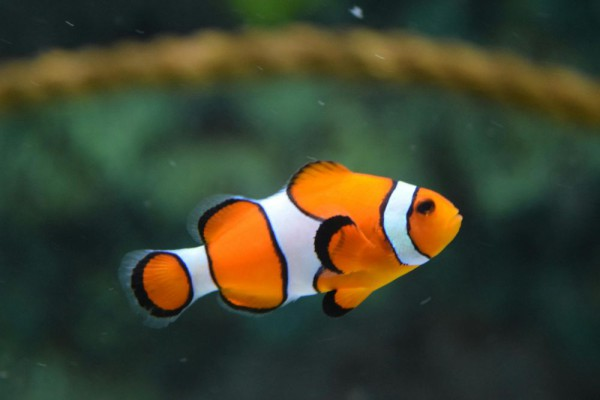
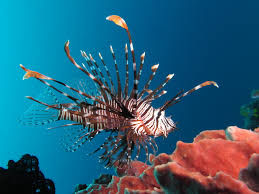

penyu adalah hewan yang banyak di temukan bertelur di beberapa pesisir pantai di indonesia sejak dahulu

ikan badut ini dapat dikenali dengan warna jingganya, ikan ini tumbuh mencapai 8 cm serta termasuk dalam ikan terpopuler didunia

lion-fish atau volitans adalah ikan berbisa milik keluarga yang Scorpaenidae terjemahaan harfiah berarti kalajengking.

Ikan moorish idol adalah salah satu ikan yang cukup populer dikalangan para hobi hias karena bentuknya yang unik dan pola warnanya.